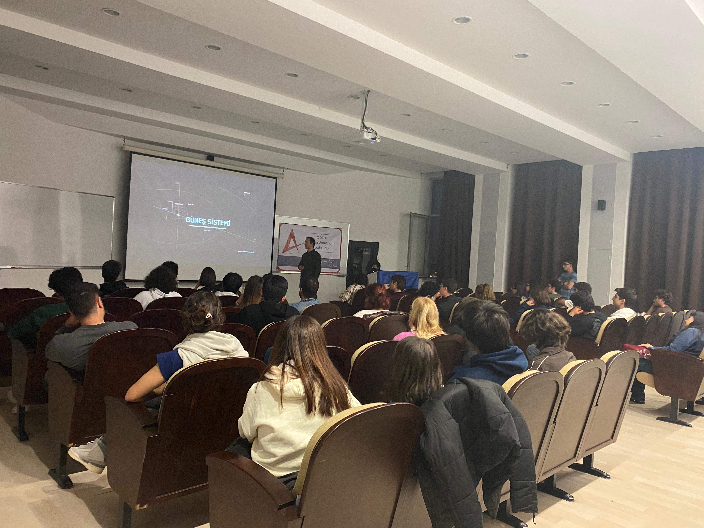
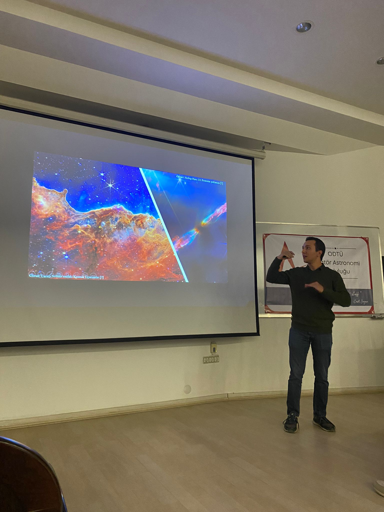
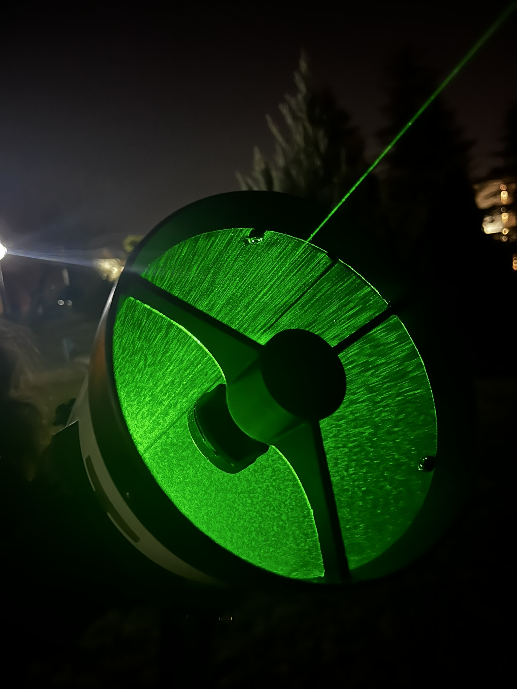
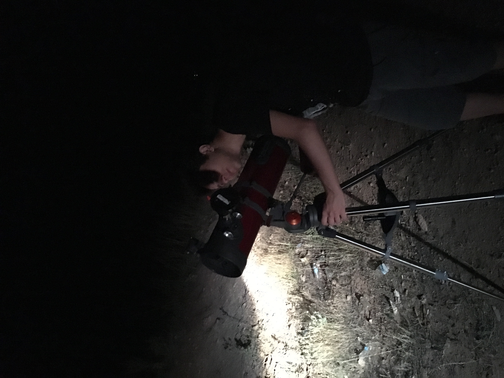
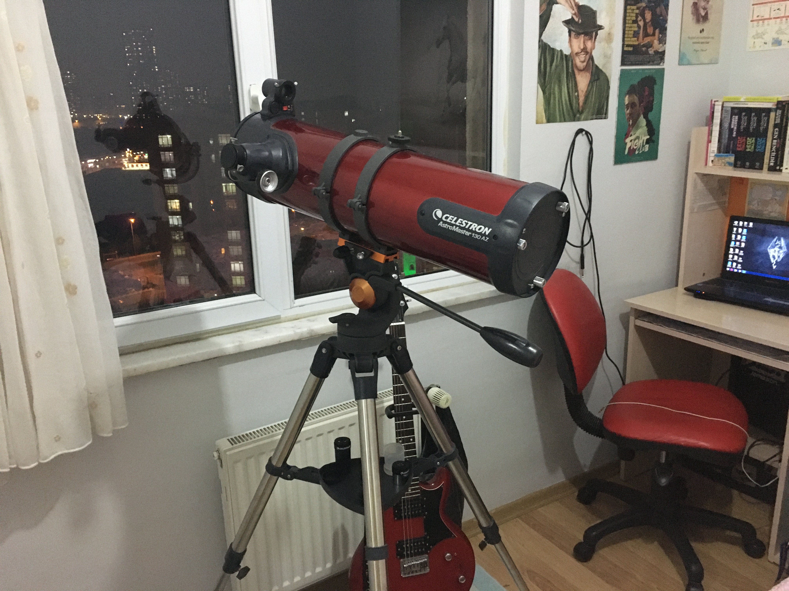
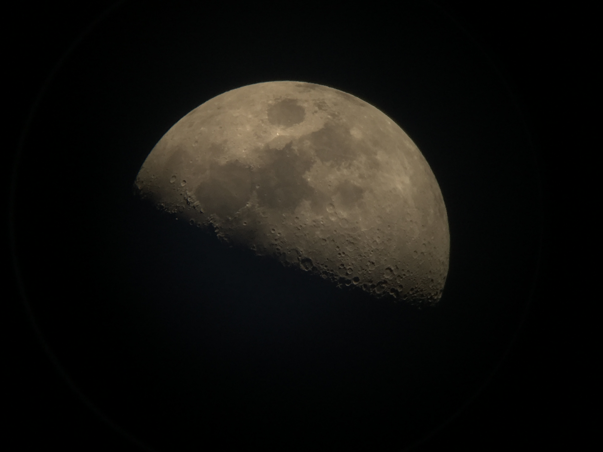

Astronomy has been a long-running thread alongside my engineering work — from a first backyard telescope and shaky iPhone shots of the Moon to dark-sky nights in my home village and, more recently, giving talks at METU's amateur astronomy society. The sections below walk through that journey in reverse, with the most recent chapter at the top and where it all started at the bottom.
About
What pulled me toward aerospace engineering in the first place was looking up. The hobby has stayed with me ever since: I still observe whenever the sky is clear and the schedule allows, and I enjoy sharing what I learn with people who are just getting curious about the night sky.
Talks at METU's Amateur Astronomy Society
I have been invited to give talks at METU's Amateur Astronomy Society. The first of two presentations was a detailed tour of the Solar System — the Sun, the terrestrial and giant planets, their moons, and the small bodies in between — aimed at members who want to go a level deeper than a typical introductory talk. The second presentation will be added here once it has been delivered.


Observing at METU
An observation night on METU's campus — telescope set up on the lawn, a green laser pointing out planets and bright stars overhead, and a small crowd taking turns at the eyepiece. Nights like these are my favourite part of the hobby: the sky does most of the work, and you get to watch someone see Saturn's rings or the craters of the Moon for the first time.


Stargazing in the Village
One of the best things I ever did with the telescope was put it in the back of a car and drive it out to my family's village. Away from city lights the sky is another order of magnitude richer — the Milky Way is plainly visible, and faint targets that are hopeless from the city actually show up. Most of my favourite nights at the eyepiece have been from there.

First Telescope & the Moon
This is where the hobby really began for me — my first proper telescope, a Celestron AstroMaster 130 AZ, set up by the bedroom window on its first night out of the box. I learned the basics of collimation, finder alignment, and just finding things in the sky on this scope, and a lot of nights ended with me holding an iPhone 6s up to the eyepiece and trying to keep it steady long enough to grab a photo.

The Moon was, naturally, the first real target — and still one of the most rewarding ones to revisit. The shot below is an afocal capture, just an iPhone 6s held against the eyepiece. Crude, but the terminator detail along the craters near the day/night line still makes me happy every time I look at it.
